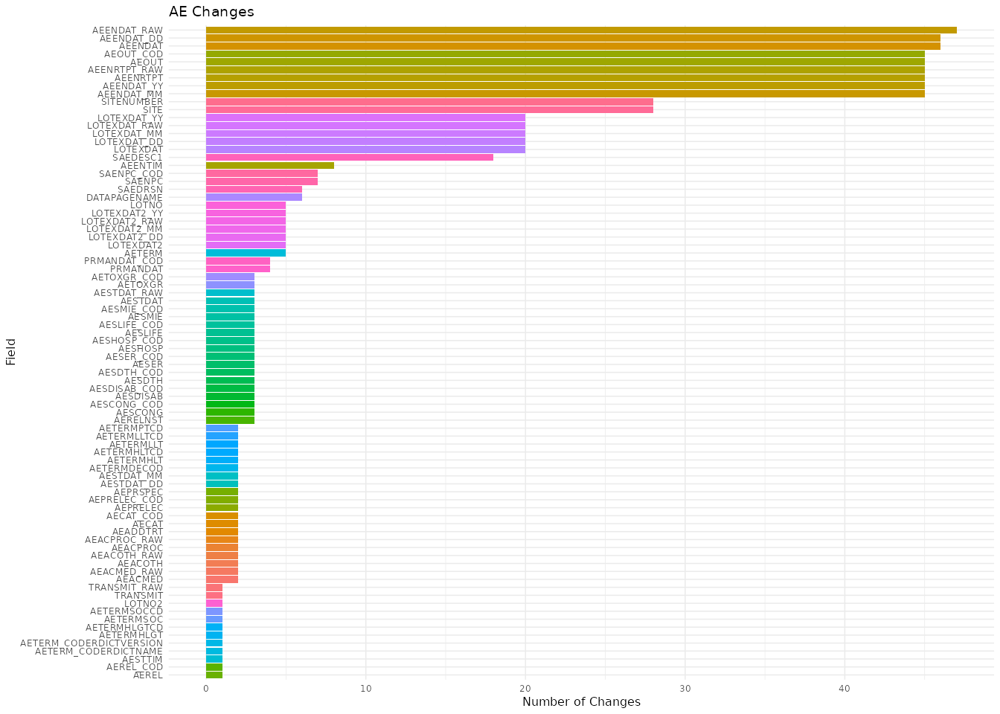
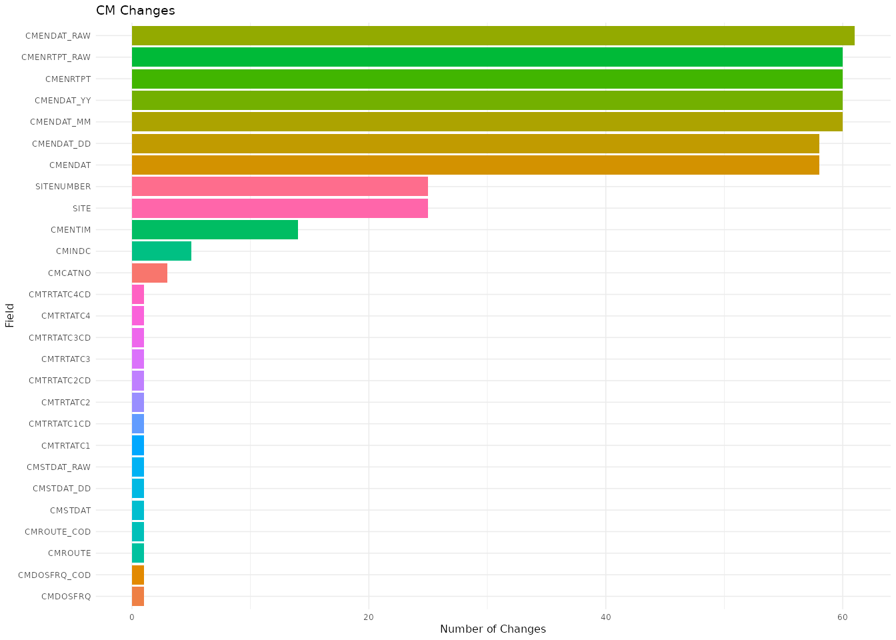
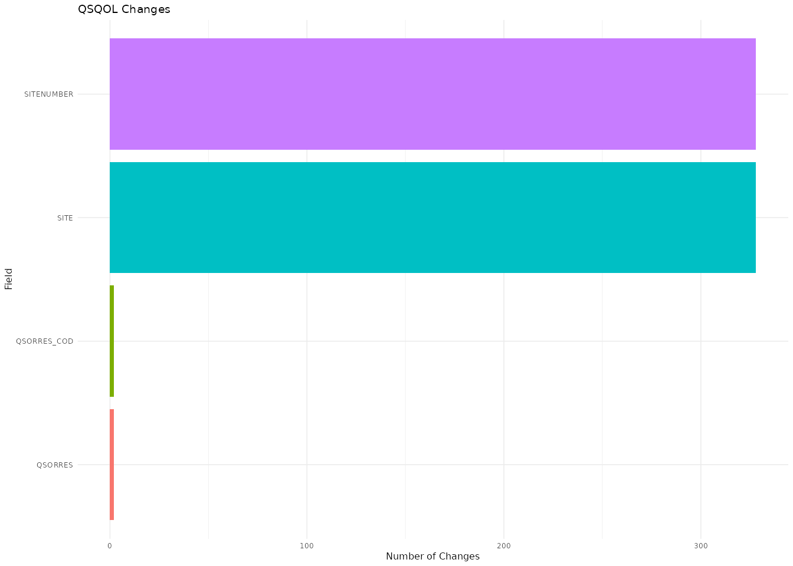
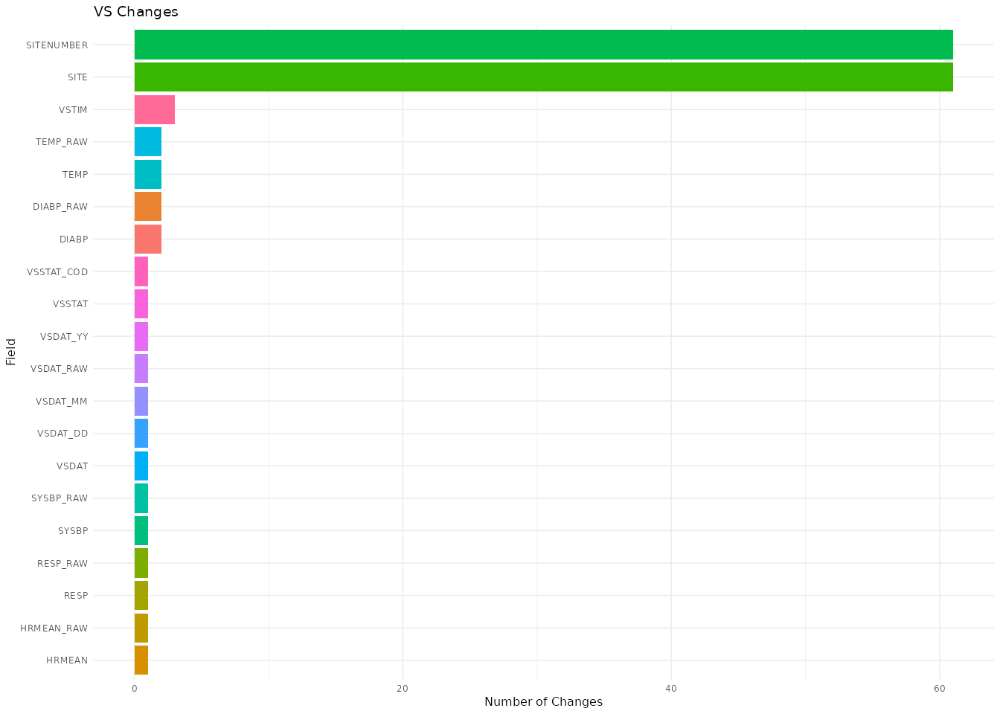

change-frequency-from-proc-compare
change-frequency-from-proc-compare.Rmd
library(dfdiffs)
library(openxlsx)
library(readxl)
library(tidyverse)
library(janitor)
library(arsenal) # comparedf
library(diffdf) # diffdfMotivation
In this vignette I’ll cover how to calculate the frequency of changes
per column for each dataset in a PROC COMPARE output file,
snapshot_compare_270301_20221116_year3_preview_noDAP.xlsx.
We’ll import the Excel file, then build a regular expression for
separating the changes recorded in the value_changes column
(the cleaned name of the Value changes column).
Import data
The code below lists the sheet names in the
snapshot_compare_270301_20221116_year3_preview_noDAP.xlsx
file.
snapshot_pth <- "../inst/extdata/xlsx/snapshot_compare_270301_20221116_year3_preview_noDAP.xlsx"
snapshoty3_sheets <- readxl::excel_sheets(snapshot_pth)
snapshoty3_sheets
#> [1] "Summary" "Key variables" "AE" "AEYN"
#> [5] "CER" "CM" "CMAIS" "DM"
#> [9] "DS" "DSIC" "DSLB" "DSSH"
#> [13] "DSSS" "ECIF" "EG" "ENR"
#> [17] "FAFS" "FALB" "FALBA" "IE"
#> [21] "LBC" "LBCG" "LBF8GENO" "LBF8GENO_CP"
#> [25] "LBH" "LBU" "LBV" "MH"
#> [29] "MHB" "MHH" "MHT" "MOU"
#> [33] "PE" "PEH" "PR" "PREGFU"
#> [37] "PRGRPT" "PROTDEV" "QSEM" "QSEQ"
#> [41] "QSHAL" "QSHAL2" "QSPROBE" "QSPROBE2"
#> [45] "QSQOL" "QSWPAI" "SRS" "SV"
#> [49] "UCRF" "VS" "VST"AE
We’ll import the "AE" sheet and check the column
names.
snap_ae_raw <- readxl::read_excel(snapshot_pth, sheet = "AE")
#> New names:
#> • `Surgical Procedure` -> `Surgical Procedure...92`
#> • `Surgical Procedure` -> `Surgical Procedure...94`
names(snap_ae_raw) |> head(10)
#> [1] "DATASET" "Subject name or identifier"
#> [3] "Site name" "Project"
#> [5] "Folder instance name" "Folder OID"
#> [7] "Folder name" "SiteNumber"
#> [9] "Environment" "eCRF Form Name"
names(snap_ae_raw) |> tail(10)
#> [1] "Reporter Last Name"
#> [2] "E2B Transmit Flag"
#> [3] "E2B Transmit Flag(Character)"
#> [4] "Transmit"
#> [5] "Transmit(Character)"
#> [6] "Relationship to immunosuppressant therapy"
#> [7] "Relationship to immunosuppressant therapyCoded Value"
#> [8] "STATUS"
#> [9] "Value changes"
#> [10] "NEWVALUES"Next, we’ll select and rename the columns we need, clean their names,
and filter the "AE" dataset to the rows with an
"Updated" value in the status column.
snap_updated <- snap_ae_raw |>
select(
subject_id = `Subject name or identifier`,
record_num = `Record number`,
DATASET,
STATUS,
`Value changes`,
NEW_VALUES = NEWVALUES) %>%
janitor::clean_names() |>
filter(status == "Updated")
glimpse(snap_updated)
#> Rows: 114
#> Columns: 6
#> $ subject_id <chr> "0009-3901", "0023-3904", "0023-3905", "0109-3901", "010…
#> $ record_num <dbl> 0, 0, 0, 0, 0, 0, 0, 0, 0, 0, 0, 0, 0, 0, 0, 0, 0, 0, 0,…
#> $ dataset <chr> "AE", "AE", "AE", "AE", "AE", "AE", "AE", "AE", "AE", "A…
#> $ status <chr> "Updated", "Updated", "Updated", "Updated", "Updated", "…
#> $ value_changes <chr> "SAENPC=, SAENPC_COD=, AERELNST=, SAEDESC1=ALT on 12/7/2…
#> $ new_values <chr> "SAENPC=Yes, SAENPC_COD=Y, AERELNST=unknown, SAEDESC1=AL…Testing SAEDESC1
Changes to SAEDESC1 contain a lot of unstructured text
with multiple commas, which makes them a good test case for separating
the column names from the value_changes column.
test_SAEDESC1 <- snap_updated |>
filter(str_detect(snap_updated$value_changes, "SAEDESC1")) |>
head(3)
glimpse(test_SAEDESC1)
#> Rows: 3
#> Columns: 6
#> $ subject_id <chr> "0009-3901", "0146-3901", "0157-3902"
#> $ record_num <dbl> 0, 0, 0
#> $ dataset <chr> "AE", "AE", "AE"
#> $ status <chr> "Updated", "Updated", "Updated"
#> $ value_changes <chr> "SAENPC=, SAENPC_COD=, AERELNST=, SAEDESC1=ALT on 12/7/2…
#> $ new_values <chr> "SAENPC=Yes, SAENPC_COD=Y, AERELNST=unknown, SAEDESC1=AL…Testing the regular expression
Below is the regular expression we’ll test these rows against.
sas_cols_regex <- "\\w*[A-Z]\\w*[A-Z]\\w*="
sas_cols_regex
#> [1] "\\w*[A-Z]\\w*[A-Z]\\w*="We’ll use str_view_all() to check whether the regular
expression matches the column names.
str_view_all(string = test_SAEDESC1$value_changes,
pattern = sas_cols_regex)
#> Warning: `str_view_all()` was deprecated in stringr 1.5.0.
#> ℹ Please use `str_view()` instead.
#> This warning is displayed once per session.
#> Call `lifecycle::last_lifecycle_warnings()` to see where this warning was
#> generated.
#> [1] │ <SAENPC=>, <SAENPC_COD=>, <AERELNST=>, <SAEDESC1=>ALT on 12/7/2021: 36; baseline = 24, <AETOXGR=>, <AETOXGR_COD=>, <AEREL=>, <AEREL_COD=>
#> [2] │ <PRMANDAT=>No, <PRMANDAT_COD=>N, <LOTNO=>L271036, <LOTEXDAT=>31JAN2020:00:00:00.000, <LOTEXDAT_RAW=>31 Jan 2020, <LOTEXDAT_YY=>2020, <LOTEXDAT_MM=>1, <LOTEXDAT_DD=>31, <SAENPC=>Yes, <SAENPC_COD=>Y, <SAEDESC1=>Central AST: 147
#> [3] │ <SAEDRSN=>, <SAEDESC1=>.
count_change_columns()
Now that we have a regular expression that matches the column names
in value_changes, we’ll write a function that counts the
occurrences of each match.
count_change_columns <- function(df) {
sas_cols_regex <- "\\w*[A-Z]\\w*[A-Z]\\w*="
# clean names
df_clean_nms <- df |> janitor::clean_names()
# value_changes
value_change_match <- dplyr::mutate(df_clean_nms,
raw_col_match = stringr::str_match_all(value_changes,
sas_cols_regex)) |>
dplyr::relocate(raw_col_match, .after = 1)
# unnest
raw_matches_long <- tidyr::unnest_longer(data = value_change_match,
col = raw_col_match)
col_matches_long <- dplyr::mutate(.data = raw_matches_long,
col_matches = stringr::str_remove_all(raw_col_match, "=")) |>
dplyr::relocate(col_matches, .after = 2)
col_count_raw <- dplyr::count(col_matches_long, col_matches,
name = "occurrence")
col_count <- dplyr::filter(col_count_raw, !is.na(col_matches))
count_tbl <- dplyr::rename(.data = col_count,
Field = col_matches,
ChangeCount = occurrence
)
return(count_tbl)
}Field and Change Count
We can derive Field and ChangeCount by
passing snap_ae_raw (the data imported from the
spreadsheet) to count_change_columns().
ae_change_freq <- count_change_columns(df = snap_ae_raw)
ae_change_freq
#> # A tibble: 82 × 2
#> Field ChangeCount
#> <chr> <int>
#> 1 AEACMED 2
#> 2 AEACMED_RAW 2
#> 3 AEACOTH 2
#> 4 AEACOTH_RAW 2
#> 5 AEACPROC 2
#> 6 AEACPROC_RAW 2
#> 7 AEADDTRT 2
#> 8 AECAT 2
#> 9 AECAT_COD 2
#> 10 AEENDAT 46
#> 11 AEENDAT_DD 46
#> 12 AEENDAT_MM 45
#> 13 AEENDAT_RAW 47
#> 14 AEENDAT_YY 45
#> 15 AEENRTPT 45
#> 16 AEENRTPT_RAW 45
#> 17 AEENTIM 8
#> 18 AEOUT 45
#> 19 AEOUT_COD 45
#> 20 AEPRELEC 2
#> 21 AEPRELEC_COD 2
#> 22 AEPRSPEC 2
#> 23 AEREL 1
#> 24 AERELNST 3
#> 25 AEREL_COD 1
#> 26 AESCONG 3
#> 27 AESCONG_COD 3
#> 28 AESDISAB 3
#> 29 AESDISAB_COD 3
#> 30 AESDTH 3
#> 31 AESDTH_COD 3
#> 32 AESER 3
#> 33 AESER_COD 3
#> 34 AESHOSP 3
#> 35 AESHOSP_COD 3
#> 36 AESLIFE 3
#> 37 AESLIFE_COD 3
#> 38 AESMIE 3
#> 39 AESMIE_COD 3
#> 40 AESTDAT 3
#> 41 AESTDAT_DD 2
#> 42 AESTDAT_MM 2
#> 43 AESTDAT_RAW 3
#> 44 AESTTIM 1
#> 45 AETERM 5
#> 46 AETERMDECOD 2
#> 47 AETERMHLGT 1
#> 48 AETERMHLGTCD 1
#> 49 AETERMHLT 2
#> 50 AETERMHLTCD 2
#> 51 AETERMLLT 2
#> 52 AETERMLLTCD 2
#> 53 AETERMPTCD 2
#> 54 AETERMSOC 1
#> 55 AETERMSOCCD 1
#> 56 AETERM_CODERDICTNAME 1
#> 57 AETERM_CODERDICTVERSION 1
#> 58 AETOXGR 3
#> 59 AETOXGR_COD 3
#> 60 DATAPAGENAME 6
#> 61 LOTEXDAT 20
#> 62 LOTEXDAT2 5
#> 63 LOTEXDAT2_DD 5
#> 64 LOTEXDAT2_MM 5
#> 65 LOTEXDAT2_RAW 5
#> 66 LOTEXDAT2_YY 5
#> 67 LOTEXDAT_DD 20
#> 68 LOTEXDAT_MM 20
#> 69 LOTEXDAT_RAW 20
#> 70 LOTEXDAT_YY 20
#> 71 LOTNO 5
#> 72 LOTNO2 1
#> 73 PRMANDAT 4
#> 74 PRMANDAT_COD 4
#> 75 SAEDESC1 18
#> 76 SAEDRSN 6
#> 77 SAENPC 7
#> 78 SAENPC_COD 7
#> 79 SITE 28
#> 80 SITENUMBER 28
#> 81 TRANSMIT 1
#> 82 TRANSMIT_RAW 1Graph Changes
We can graph these changes, but we have to set the font size manually
because of the long y axis.
ggplot(data = ae_change_freq,
mapping = aes(x = ChangeCount,
y = forcats::fct_reorder(.f = Field,
.x = ChangeCount))) +
geom_col(aes(fill = Field), show.legend = FALSE) +
labs(title = "AE Changes",
y = "Field",
x = "Number of Changes") +
theme_minimal(base_size = 6)
Map to other sheets
Now we can apply count_change_columns() to every sheet
in
snapshot_compare_270301_20221116_year3_preview_noDAP.xlsx.
First, we remove the Summary and
Key variables sheets from
snapshoty3_sheets.
form_sheets <- snapshoty3_sheets[! snapshoty3_sheets %in% c('Summary', 'Key variables')]
form_sheets
#> [1] "AE" "AEYN" "CER" "CM" "CMAIS"
#> [6] "DM" "DS" "DSIC" "DSLB" "DSSH"
#> [11] "DSSS" "ECIF" "EG" "ENR" "FAFS"
#> [16] "FALB" "FALBA" "IE" "LBC" "LBCG"
#> [21] "LBF8GENO" "LBF8GENO_CP" "LBH" "LBU" "LBV"
#> [26] "MH" "MHB" "MHH" "MHT" "MOU"
#> [31] "PE" "PEH" "PR" "PREGFU" "PRGRPT"
#> [36] "PROTDEV" "QSEM" "QSEQ" "QSHAL" "QSHAL2"
#> [41] "QSPROBE" "QSPROBE2" "QSQOL" "QSWPAI" "SRS"
#> [46] "SV" "UCRF" "VS" "VST"Then we name each element in the vector with its own sheet name and
store the result in form_sheets_nmd.
form_sheets_nmd <- purrr::set_names(form_sheets)
form_sheets_nmd
#> AE AEYN CER CM CMAIS
#> "AE" "AEYN" "CER" "CM" "CMAIS"
#> DM DS DSIC DSLB DSSH
#> "DM" "DS" "DSIC" "DSLB" "DSSH"
#> DSSS ECIF EG ENR FAFS
#> "DSSS" "ECIF" "EG" "ENR" "FAFS"
#> FALB FALBA IE LBC LBCG
#> "FALB" "FALBA" "IE" "LBC" "LBCG"
#> LBF8GENO LBF8GENO_CP LBH LBU LBV
#> "LBF8GENO" "LBF8GENO_CP" "LBH" "LBU" "LBV"
#> MH MHB MHH MHT MOU
#> "MH" "MHB" "MHH" "MHT" "MOU"
#> PE PEH PR PREGFU PRGRPT
#> "PE" "PEH" "PR" "PREGFU" "PRGRPT"
#> PROTDEV QSEM QSEQ QSHAL QSHAL2
#> "PROTDEV" "QSEM" "QSEQ" "QSHAL" "QSHAL2"
#> QSPROBE QSPROBE2 QSQOL QSWPAI SRS
#> "QSPROBE" "QSPROBE2" "QSQOL" "QSWPAI" "SRS"
#> SV UCRF VS VST
#> "SV" "UCRF" "VS" "VST"Import all sheets
We can now import every sheet from the file at
snapshot_pth and store them in the all_sheets
list.
all_sheets <- form_sheets_nmd |>
map(~ readxl::read_excel(path = snapshot_pth, sheet = .x))
#> New names:
#> New names:
#> New names:
#> New names:
#> New names:
#> New names:
#> • `Surgical Procedure` -> `Surgical Procedure...92`
#> • `Surgical Procedure` -> `Surgical Procedure...94`The names of all_sheets confirm the list contains every
imported sheet.
names(all_sheets)
#> [1] "AE" "AEYN" "CER" "CM" "CMAIS"
#> [6] "DM" "DS" "DSIC" "DSLB" "DSSH"
#> [11] "DSSS" "ECIF" "EG" "ENR" "FAFS"
#> [16] "FALB" "FALBA" "IE" "LBC" "LBCG"
#> [21] "LBF8GENO" "LBF8GENO_CP" "LBH" "LBU" "LBV"
#> [26] "MH" "MHB" "MHH" "MHT" "MOU"
#> [31] "PE" "PEH" "PR" "PREGFU" "PRGRPT"
#> [36] "PROTDEV" "QSEM" "QSEQ" "QSHAL" "QSHAL2"
#> [41] "QSPROBE" "QSPROBE2" "QSQOL" "QSWPAI" "SRS"
#> [46] "SV" "UCRF" "VS" "VST"Map count_change_columns() to
all_sheets
We’ll map() count_change_columns() over
each element in all_sheets and store the results in the
all_field_counts list.
all_field_counts <- purrr::map(.x = all_sheets, .f = count_change_columns)
names(all_field_counts)
#> [1] "AE" "AEYN" "CER" "CM" "CMAIS"
#> [6] "DM" "DS" "DSIC" "DSLB" "DSSH"
#> [11] "DSSS" "ECIF" "EG" "ENR" "FAFS"
#> [16] "FALB" "FALBA" "IE" "LBC" "LBCG"
#> [21] "LBF8GENO" "LBF8GENO_CP" "LBH" "LBU" "LBV"
#> [26] "MH" "MHB" "MHH" "MHT" "MOU"
#> [31] "PE" "PEH" "PR" "PREGFU" "PRGRPT"
#> [36] "PROTDEV" "QSEM" "QSEQ" "QSHAL" "QSHAL2"
#> [41] "QSPROBE" "QSPROBE2" "QSQOL" "QSWPAI" "SRS"
#> [46] "SV" "UCRF" "VS" "VST"We can check the results by graphing the changes in a few of the forms.
CM Changes
The graph below shows the number of changes per field in the
CM form.
all_field_counts$CM |>
ggplot(mapping = aes(x = ChangeCount,
y = forcats::fct_reorder(.f = Field,
.x = ChangeCount))) +
geom_col(aes(fill = Field), show.legend = FALSE) +
labs(title = "CM Changes",
y = "Field",
x = "Number of Changes") +
theme_minimal(base_size = 6)
QSQOL Changes
The graph below shows the number of changes per field in the
QSQOL form.
all_field_counts$QSQOL |>
ggplot(mapping = aes(x = ChangeCount,
y = forcats::fct_reorder(.f = Field,
.x = ChangeCount))) +
geom_col(aes(fill = Field), show.legend = FALSE) +
labs(title = "QSQOL Changes",
y = "Field",
x = "Number of Changes") +
theme_minimal(base_size = 6)
VS Changes
The graph below shows the number of changes per field in the
VS form.
all_field_counts$VS |>
ggplot(mapping = aes(x = ChangeCount,
y = forcats::fct_reorder(.f = Field,
.x = ChangeCount))) +
geom_col(aes(fill = Field), show.legend = FALSE) +
labs(title = "VS Changes",
y = "Field",
x = "Number of Changes") +
theme_minimal(base_size = 6)
Export field count tables
We can export these tables to the inst/out/ folder as
all-field-counts.xlsx, with one sheet per form.
library(openxlsx)
# create wb
openxlsx::write.xlsx(x = all_field_counts,
file = "../inst/out/all-field-counts.xlsx")